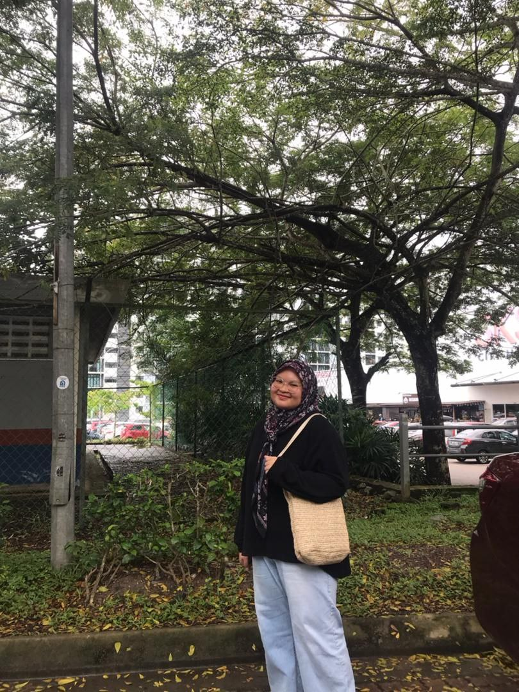

Hi everyone
My name is Balqis Insyirah binti Osman. I was born on 8 July 2005 at Hospital Besar Kota Belud.
I am the third child out of five siblings. I was born and raised in Sabah, but I moved to Johor when I was 14 years old.
I hope to complete my diploma with a place on the Dean’s List.
Please keep me in your prayers. Thank you guys and I pray the same goes to you all. Aamiin.
Favorites & Hobbies
| Favorite Food |
|---|
|
| Hobbies |
|---|
|
| Favorite Youtubers |
|---|
|
Fun Facts
I want to share my fun fact to you guys, it might be not fun but it is a facts.- I used to stay at an orphanage because my late father worked there.
- I have one older brother, one older sister, one younger brother, and one younger sister. I am the middle child.
- My mother originally wanted only two children, but she said she felt that my father would pass away early. She decided to have me and my two younger siblings so there would be someone to keep her company.
- Farah likes watching Aisyah Habshee because she saw me watching her and started following along.
Favourite Shows
- Running Man
- Ejen Ali
- Encanto
- Luca
- Coco
Dreams
- My dreams is to be rich, but not rich rich like Dato Alif Syukri. I just want to have enough so that i can buy everything that my mom and my family want. Most importanly i can buy anything without thinking about the price.
- I really want to do skydiving, i might be scared but i want to try it
- I want to watch a musical show or orchestra.
I have a lot more dreams, but for now i will only share this three.
Favorite Songs
-
I Wanna Be Yours by Artic Monkeys
-
Can't Lie by Ali Gatie